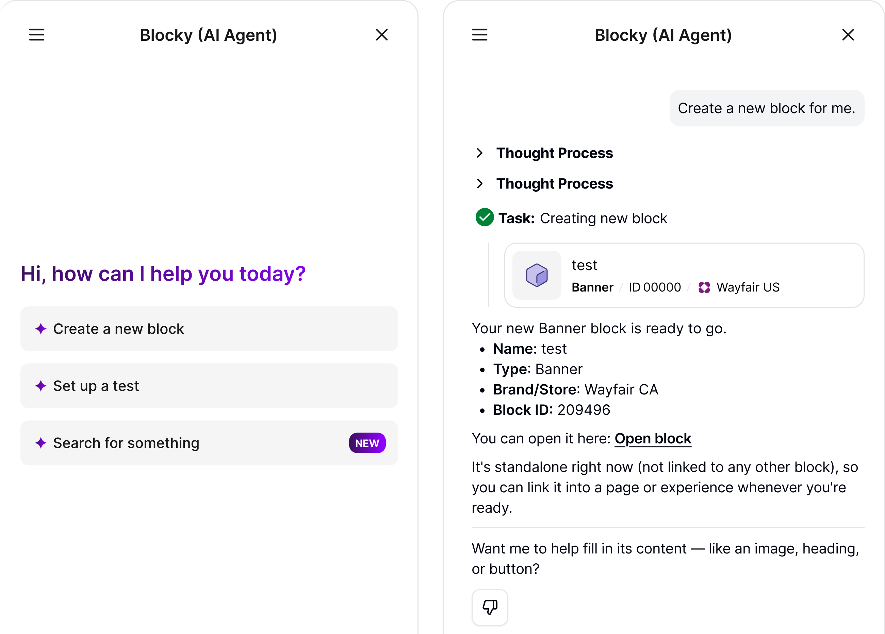
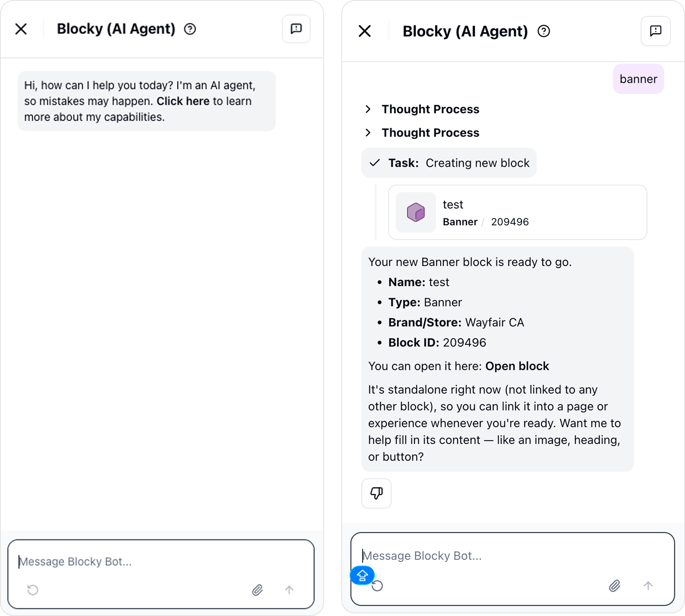
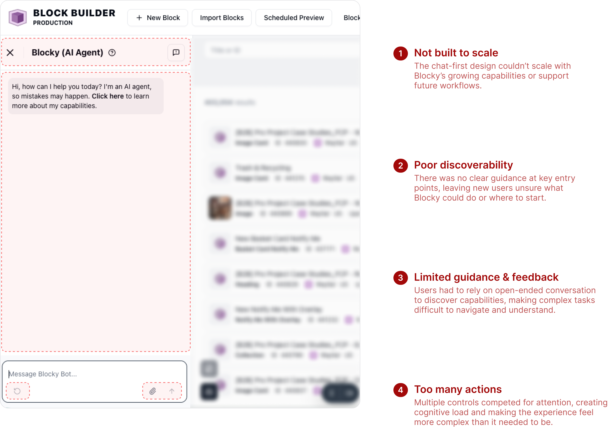
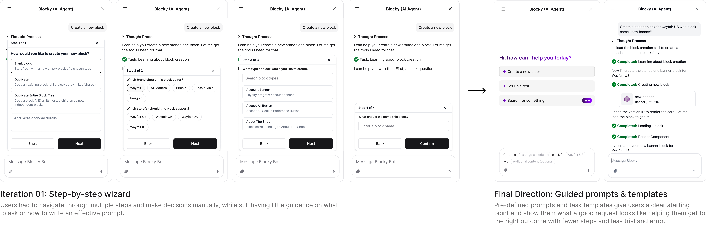
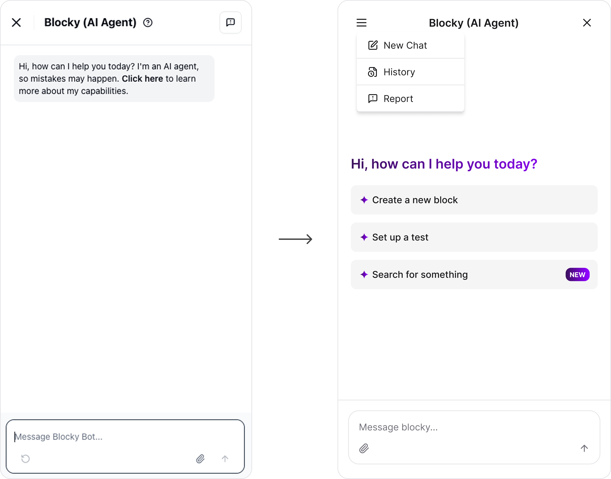
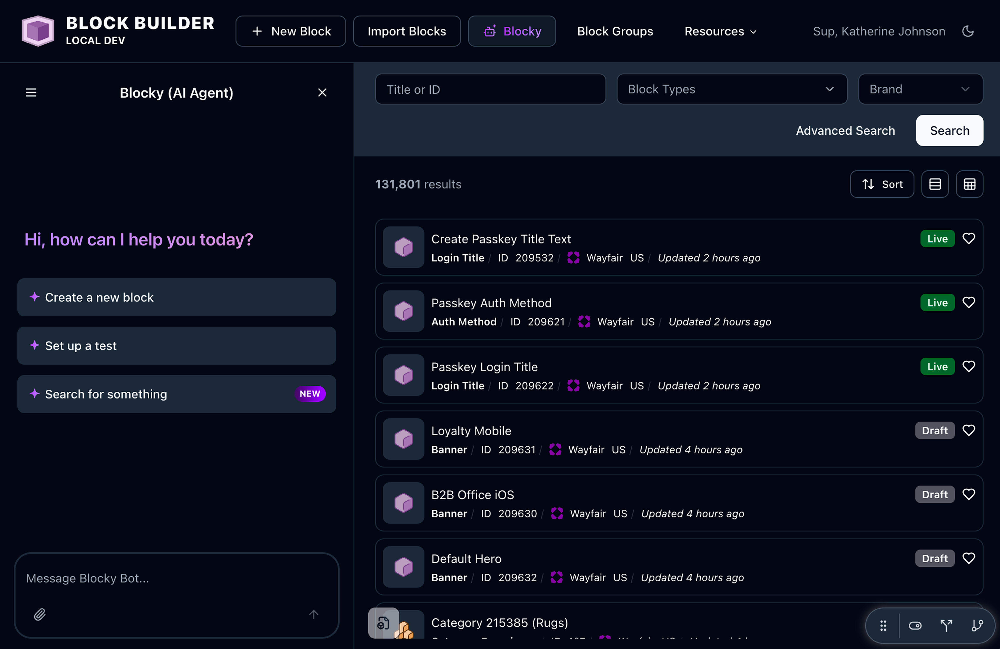
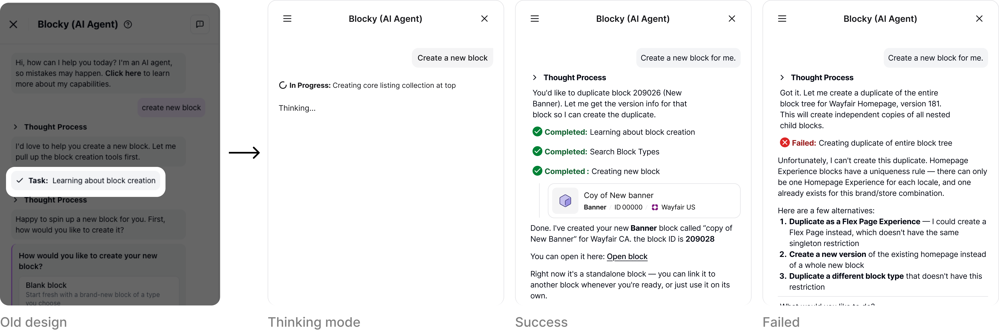
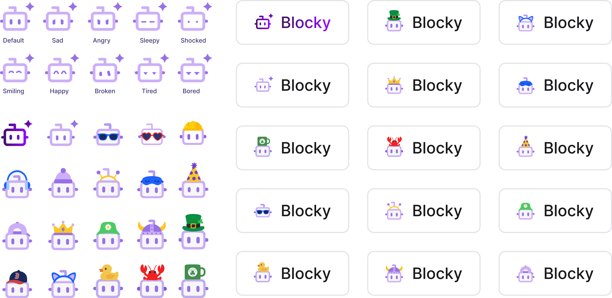
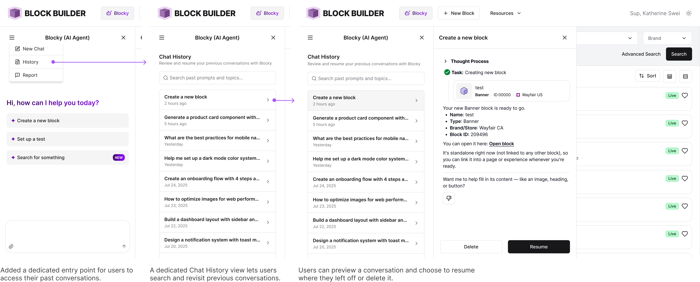

Blocky — Wayfair's Internal AI Agent
Redesigning Blocky from a chatbot into a structured, extensible main UI — starting new users with a ready-made template so they finally know what to ask.
Problems
Blocky was a chatbot-shaped tool becoming the platform's main UI — it didn't guide users, didn't drive action, and couldn't scale to new workflows.
My role
- Led the redesign end-to-end
- Designed the Blocky icon, brand color & UI
- Proposed the design solution & MVP
Solution
A first-use template that shows users what to ask, on a structured, extensible UI ready to grow into the platform's main surface.
Impact
- Creating a block: ~1 min → ~10 sec (early testing, ~10 people)
- Set the foundation for Blocky as the platform's main UI

Problem
Blocky was becoming the main UIbut still shaped like a chatbot
Blocky was starting to turn complex, manual workflows into simple requests—letting users create and manage content through an AI agent instead of navigating the platform step by step. As Blocky became the platform's primary surface, the chatbot model started to show its limits.
It broke down in three ways: it didn't guide (no clear entry points left users unsure what Blocky could do or where to start), didn't drive action (long back-and-forth conversations made it harder to turn intent into action), and didn't scale (a chat-first model was difficult to extend to new capabilities and workflows).

Design Exploration
Make it easierto start
Blocky helps Wayfair teams create and manage content blocks, but starting with an open chat box left users unsure of what to ask or how to get the result they wanted.
I first explored a guided wizard that broke the task into smaller questions, helping users move from an empty chat box to a completed block. But testing revealed a deeper problem: even when users knew which steps to follow, they still didn't know what a good request looked like.
"What should I actually ask Blocky?"
That shifted my approach. Instead of teaching users how to construct a prompt step by step, I explored teaching by example—using predefined prompts and task templates to show users what Blocky could do and give them a starting point they could adapt.
From
Guide users step by step
To
Guide users what they can ask

Shaping the Direction
Turning explorationinto product direction
The explorations revealed that Blocky needed to be more than a better chat experience. If Blocky was going to become a primary surface for AI-powered workflows, it needed to help users discover, act, and grow with the product.
I brought these explorations into conversations with PM and engineering to align on the experience we wanted to build, what was feasible for the MVP, and how the interaction model could support future capabilities. Three principles shaped the direction:
Make it easier to start
Give users a concrete starting point instead of asking them to begin with a blank prompt.
Help users move forward
Turn open-ended conversations into clearer, more actionable workflows with less back-and-forth.
Design for what's next
Create a flexible interaction model where new capabilities could be introduced without redesigning the experience each time.
The goal wasn't to add more structure for the sake of structure. It was to put the right amount of guidance around AI so users could stay in control without needing to know how the system works.

Solution
From chatbotto AI workspace
The redesigned Blocky turns an open-ended chatbot into a guided AI workspace—helping users get started with clear entry points, understand what's happening at every step, and work alongside an AI agent that feels more like a collaborative partner than a chatbot.
A guided experience for high-frequency tasks
I designed the end-to-end flow around one of Blocky's most frequent tasks: creating a new block. Predefined prompts give users a clear starting point, while the guided flow takes them from their first request to a completed result with less guesswork. I also built the prototype in local development on my own branch, allowing me to bring the interaction closer to production and demonstrate the experience to the team.

Dark mode

Making progress and outcomes visible
Blocky's tasks move through different states—from thinking to completed or failed. The previous design relied heavily on black text, making these important signals easy to miss within the response. I introduced color, icons, and concise status labels to create stronger visual cues, so users can understand what's happening and scan outcomes without reading every line.

Bonus: Meet a new Blocky, more than just a robot
As Blocky became a bigger part of the workspace, I wanted it to feel more approachable and fun, not just another AI chatbot. Inspired by the playful simplicity of Tamagotchi, I created a library of expressions and accessories that give Blocky its own personality while keeping the core design simple.
I also used AI throughout the process, from exploring visual directions with ChatGPT to turning selected concepts into editable SVGs with Figma Make. Boston-inspired and seasonal themes give the system room to evolve and bring a little more joy to the experience :)
What's next
Designing forwhat comes next
The MVP was built on a foundation meant to grow. The clearest next step is chat history — the most requested feature from users — so people can return to a past conversation and pick up where they left off instead of starting over each time.

Reflection
What I learned
Guidance moves people through a task; a concrete example teaches them the standard. A ready-made template did what a step-by-step wizard couldn't — new users learned what "good" looks like by seeing one. And the best fix for right now shouldn't cap what the product can become: solving for the user in front of me and the surface Blocky is growing into turned out to be the same job.
What I'd do differently
I'd validate the template with more real users before rollout, and instrument adoption from day one — so the win shows up in production, not just in early testing.